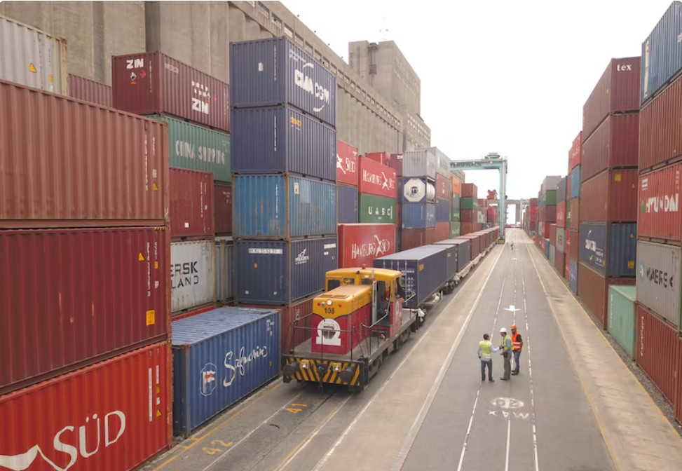

Las importaciones que más aumentaron en Argentina y qué pasará con la balanza comercial
Las importaciones de bienes aumentaron un 34,3% en los primeros cinco meses del año. Entre los productos que más crecieron se encuentran maquinarias industriales, insumos energéticos y bienes intermedios para la industria local.
Este incremento responde en gran parte a la recuperación económica, el aumento en la demanda interna y la necesidad de abastecer sectores clave como la construcción, la energía y la tecnología.
Sin embargo, el salto en las importaciones genera preocupación sobre el impacto en la balanza comercial. Las proyecciones del Ministerio de Economía estiman que el superávit comercial será menos de la mitad que en 2024.
Analistas sostienen que, si las exportaciones no logran acompañar este ritmo, podría verse afectada la estabilidad del tipo de cambio y las reservas del Banco Central.